Displaying Surfaces with RGL
Bradley Buchsbaum
2026-02-03
Source:vignettes/displaying-surfaces.Rmd
displaying-surfaces.RmdThis vignette demonstrates how to display 3D brain surface meshes
using the rgl plotting tools provided by the
neurosurf package, primarily through the
plot() method which utilizes the
view_surface() function internally.
For interactive HTML widgets, see Interactive Surface Visualization with surfwidget. For high-level, surfplot-style multi-view layouts with shared colourbars and atlas outlines, see Surfplot-style Figures with neurosurf.
Setup and Loading Data
First, we set up knitr options to embed rgl
plots directly into the HTML output using WebGL and prevent standalone
rgl windows from popping up during knitting. We then load
example left and right hemisphere white matter surfaces included with
the package and prepare some data (smoothed geometry, curvature, random
values) for the examples.
Basic Surface Plotting
The simplest way to display a SurfaceGeometry object is
using the plot() method. By default, it renders the surface
with a light gray background. We can specify a
viewpoint.
# Plot the smoothed left hemisphere from a lateral viewpoint
render_surface(white_lh_display, viewpoint = "lateral", lit = TRUE)
#> Warning in min(x): no non-missing arguments to min; returning Inf
#> Warning in max(x): no non-missing arguments to max; returning -Inf
#> file:////private/var/folders/9h/nkjq6vss7mqdl4ck7q1hd8ph0000gp/T/Rtmp8JJqZZ/file1688a3c77c33.html screenshot completed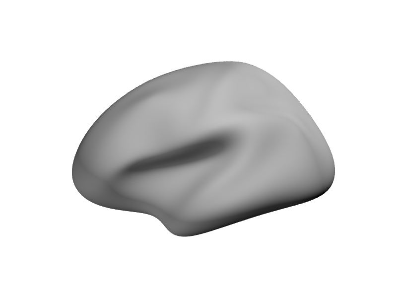
Coloring Based on Curvature
Surface curvature helps distinguish gyri (outward folds) from sulci
(inward folds). The curvature() function calculates this,
and curv_cols() provides a simple binary color mapping
(default: light gray for positive/gyri, dark gray for negative/sulci).
We can pass these colors to the bgcol argument of
plot() to color the surface background.
# Calculate curvature colors
curv_colors <- curv_cols(curv_lh_display)
# Plot with curvature background from a medial viewpoint
render_surface(white_lh_display, bgcol = curv_colors, viewpoint = "medial", specular = "black")
#> Warning in min(x): no non-missing arguments to min; returning Inf
#> Warning in max(x): no non-missing arguments to max; returning -Inf
#> file:////private/var/folders/9h/nkjq6vss7mqdl4ck7q1hd8ph0000gp/T/Rtmp8JJqZZ/file1688a17ad03c.html screenshot completed
Overlaying Data Values
Often, we want to visualize data mapped onto the surface vertices
(e.g., activation values, thickness). We can pass a vector of values to
the vals argument. The cmap argument specifies
the color map, and irange defines the data range to map
onto the colormap. Values outside irange are clamped to the
minimum or maximum color.
# Overlay random data using a rainbow colormap
# Map data range from -2 to 2 onto the colormap
render_surface(white_lh_display, vals = random_vals_display_smooth, cmap = rainbow(256),
irange = c(-2, 2), thresh = NULL, viewpoint = "lateral", specular = "gray")
#> file:////private/var/folders/9h/nkjq6vss7mqdl4ck7q1hd8ph0000gp/T/Rtmp8JJqZZ/file1688a21050e9e.html screenshot completed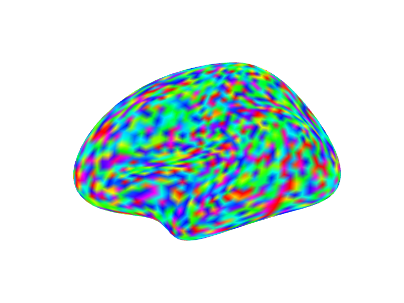
Thresholding Data Visualization
The thresh argument (a vector of two values,
c(lower, upper)) can be used with vals to make
parts of the surface transparent. Vertices where the corresponding value
in vals is inside this range (between
lower and upper) are rendered transparently;
values outside remain opaque. This is useful for masking out a band of
values.
# Same data overlay as above, but make values between -1 and 1 transparent
render_surface(white_lh_display, vals = random_vals_display_smooth, cmap = rainbow(256),
irange = c(-2, 2), thresh = c(-1, 1), viewpoint = "lateral", lit = TRUE)
#> file:////private/var/folders/9h/nkjq6vss7mqdl4ck7q1hd8ph0000gp/T/Rtmp8JJqZZ/file1688a2f00b8b6.html screenshot completed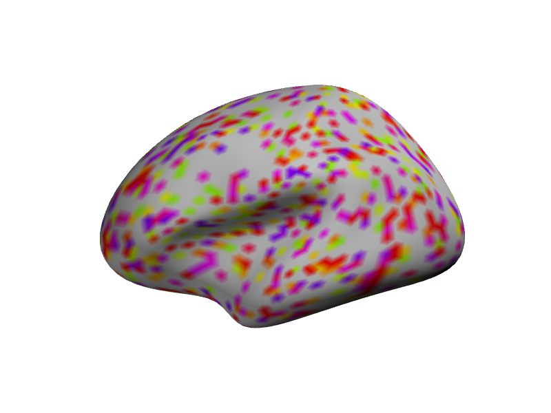
Direct Vertex Coloring
Instead of mapping data values to a colormap, you can provide a
vector of specific hex color codes directly to the
vert_clrs argument. This overrides vals and
cmap. The vector length must match the number of
vertices.
# Color vertices based on their x-coordinate (e.g., red for positive x, blue for negative)
x_coords <- coords(white_lh_display)[, 1]
vertex_colors <- ifelse(x_coords > median(x_coords), "#FF0000", "#0000FF") # Red/Blue
render_surface(white_lh_display, vert_clrs = vertex_colors, viewpoint = "ventral", lit = TRUE)
#> Warning in min(x): no non-missing arguments to min; returning Inf
#> Warning in max(x): no non-missing arguments to max; returning -Inf
#> file:////private/var/folders/9h/nkjq6vss7mqdl4ck7q1hd8ph0000gp/T/Rtmp8JJqZZ/file1688a4154d74f.html screenshot completed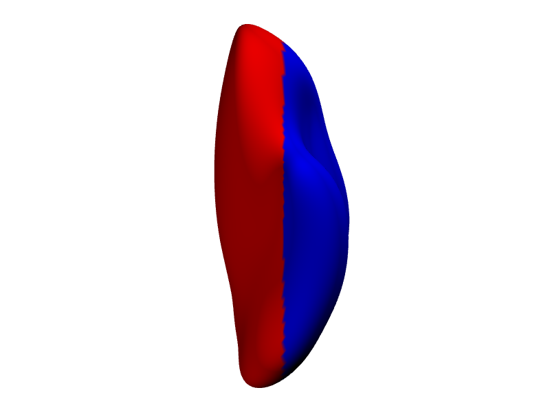
Controlling Transparency
The alpha argument controls the overall transparency of
the surface, ranging from 0 (fully transparent) to 1 (fully opaque).
# Plot the surface with 60% opacity (40% transparent)
render_surface(white_lh_display, vals = random_vals_display_smooth, cmap = heat.colors(256),
irange = c(-2, 2), alpha = 0.6, viewpoint = "posterior")
#> file:////private/var/folders/9h/nkjq6vss7mqdl4ck7q1hd8ph0000gp/T/Rtmp8JJqZZ/file1688a1c69f6f7.html screenshot completed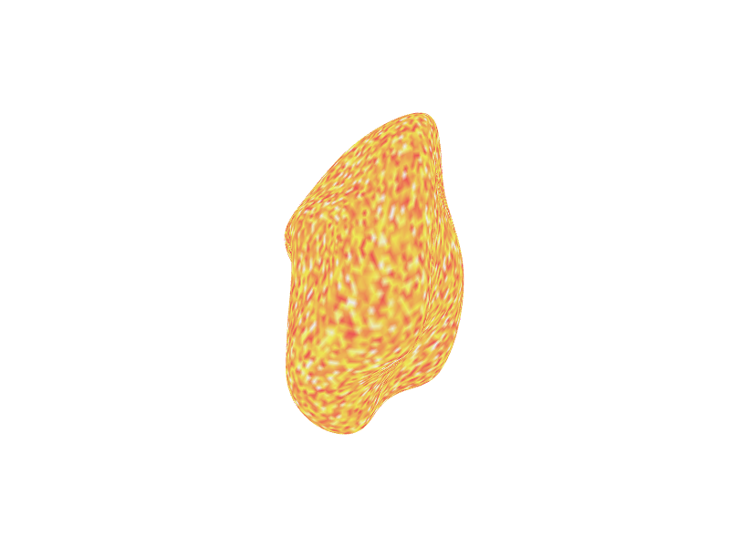
Adjusting Lighting and Material
The appearance of the surface is affected by lighting. The
specular argument controls the color of specular highlights
(shininess). Setting it to "black" creates a matte
appearance.
# Plot with a matte finish (no specular highlights)
render_surface(white_lh_display, vals = random_vals_display_smooth, cmap = topo.colors(256),
irange = c(-2, 2), specular = "black", viewpoint = "lateral", lit = TRUE)
#> file:////private/var/folders/9h/nkjq6vss7mqdl4ck7q1hd8ph0000gp/T/Rtmp8JJqZZ/file1688a7c98a76.html screenshot completed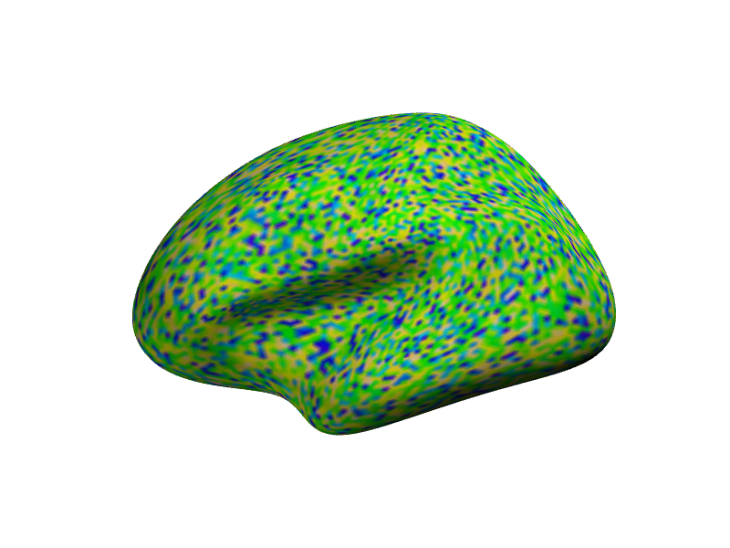
Snapshotting to an image (for knitr/CI)
Use to render an off-screen PNG and include it directly:
.render_counter$n <- .render_counter$n + 1
snapshot_file <- knitr::fig_path(paste0("-snapshot-", .render_counter$n, ".png"))
dir.create(dirname(snapshot_file), recursive = TRUE, showWarnings = FALSE)
img_path <- try(snapshot_surface(white_lh_display,
file = snapshot_file,
vals = random_vals_display_smooth,
cmap = viridis::viridis(256),
viewpoint = "lateral",
specular = "black",
width = 1200, height = 900),
silent = TRUE)
#> file:////private/var/folders/9h/nkjq6vss7mqdl4ck7q1hd8ph0000gp/T/Rtmp8JJqZZ/file1688a4319fa86.html screenshot completed
if (!inherits(img_path, "try-error") && is.character(img_path) && file.exists(img_path)) {
knitr::include_graphics(img_path)
} else {
cat("*(Snapshot unavailable in this build environment)*")
}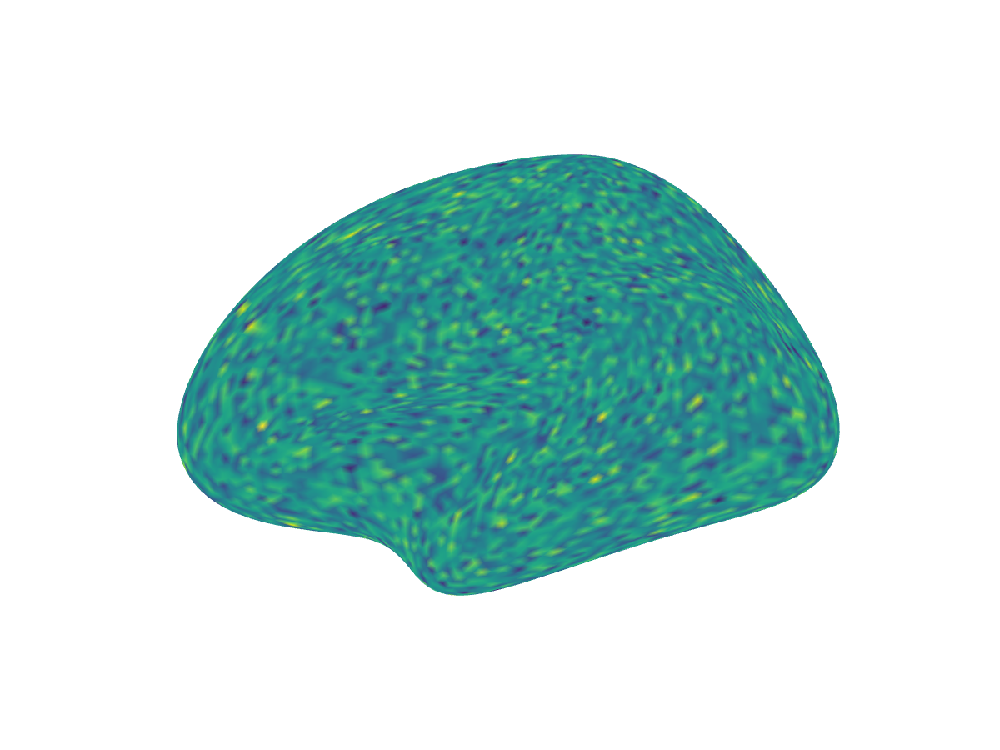
Changing Viewpoints
The viewpoint argument can be set to common anatomical
views like "lateral", "medial",
"ventral", or "posterior". The function
automatically selects the correct left/right version based on the
surface’s hemisphere information (surf@hemi).
# Display multiple viewpoints
render_multi_view(white_lh_display, viewpoints = c("lateral", "medial", "ventral", "posterior"))
#> Warning in min(x): no non-missing arguments to min; returning Inf
#> Warning in max(x): no non-missing arguments to max; returning -Inf
#> file:////private/var/folders/9h/nkjq6vss7mqdl4ck7q1hd8ph0000gp/T/Rtmp8JJqZZ/file1688a5dd5293b.html screenshot completed
#> Warning in min(x): no non-missing arguments to min; returning Inf
#> Warning in min(x): no non-missing arguments to max; returning -Inf
#> file:////private/var/folders/9h/nkjq6vss7mqdl4ck7q1hd8ph0000gp/T/Rtmp8JJqZZ/file1688a5586109d.html screenshot completed
#> Warning in min(x): no non-missing arguments to min; returning Inf
#> Warning in min(x): no non-missing arguments to max; returning -Inf
#> file:////private/var/folders/9h/nkjq6vss7mqdl4ck7q1hd8ph0000gp/T/Rtmp8JJqZZ/file1688a54acdf48.html screenshot completed
#> Warning in min(x): no non-missing arguments to min; returning Inf
#> Warning in min(x): no non-missing arguments to max; returning -Inf
#> file:////private/var/folders/9h/nkjq6vss7mqdl4ck7q1hd8ph0000gp/T/Rtmp8JJqZZ/file1688a21771b66.html screenshot completed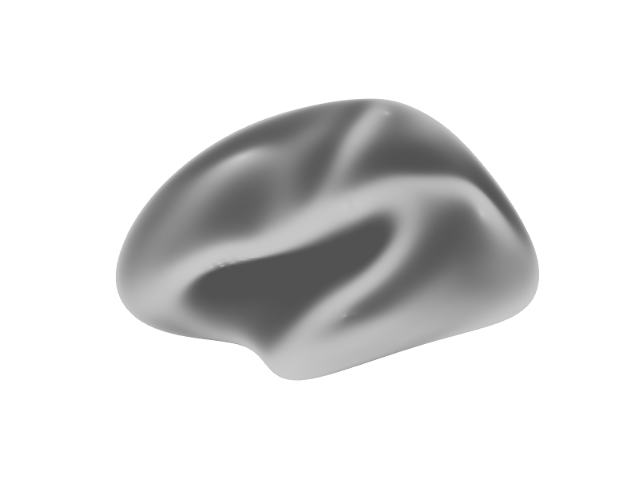
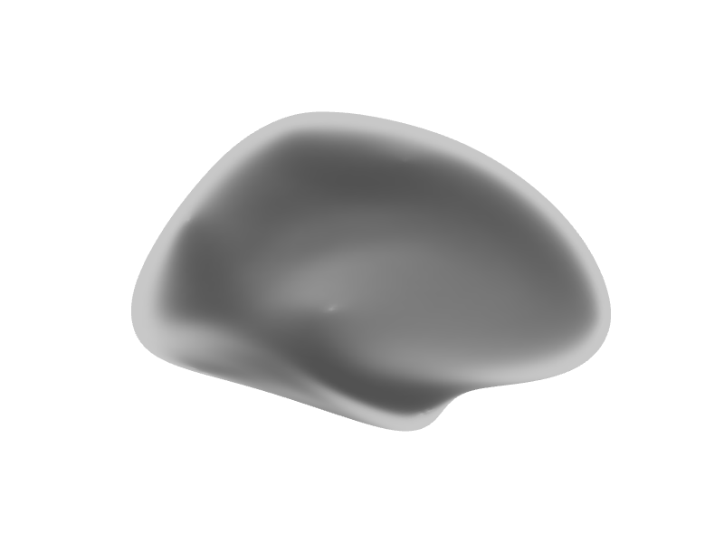
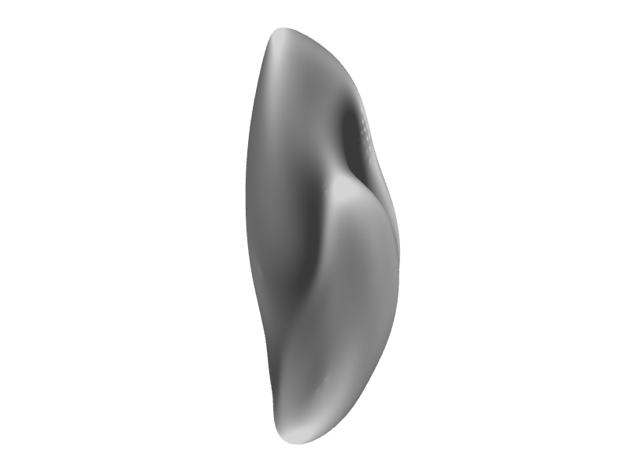
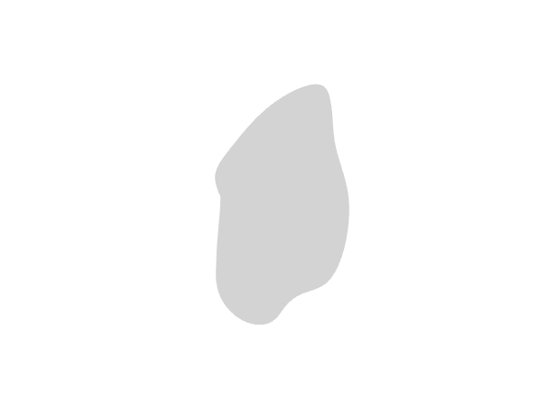
Displaying Two Hemispheres
You can plot multiple surfaces in the same rgl scene.
When plotting the second surface, use new_window = FALSE to
add it to the existing window. You might need to use the
offset argument to position the second hemisphere correctly
relative to the first.
# Smooth the right hemisphere and get its curvature
white_rh_smooth <- smooth(white_rh, type = "HCLaplace", delta = 0.2, iteration = 5)
curv_rh <- curvature(white_rh_smooth)
# Try snapshot approach for two hemispheres
.render_counter$n <- .render_counter$n + 1
two_hemi_file <- knitr::fig_path(paste0("-twohemi-", .render_counter$n, ".png"))
dir.create(dirname(two_hemi_file), recursive = TRUE, showWarnings = FALSE)
img_path <- try({
file <- two_hemi_file
rgl::open3d()
rgl::par3d(windowRect = c(0, 0, 1200, 600))
rgl::bg3d(color = "white")
# Plot LH with curvature background
view_surface(white_lh_display, bgcol = curv_cols(curv_lh_display),
viewpoint = "lateral", new_window = FALSE)
# Plot RH offset to the right
view_surface(white_rh_smooth, bgcol = curv_cols(curv_rh),
viewpoint = "lateral", new_window = FALSE, offset = c(100, 0, 0))
if (rgl::rgl.useNULL() && requireNamespace("webshot2", quietly = TRUE)) {
rgl::snapshot3d(file, webshot = TRUE)
} else {
rgl::rgl.snapshot(file)
}
rgl::close3d()
file
}, silent = TRUE)
#> Warning in min(x): no non-missing arguments to min; returning Inf
#> Warning in max(x): no non-missing arguments to max; returning -Inf
#> Warning in min(x): no non-missing arguments to min; returning Inf
#> Warning in max(x): no non-missing arguments to max; returning -Inf
#> file:////private/var/folders/9h/nkjq6vss7mqdl4ck7q1hd8ph0000gp/T/Rtmp8JJqZZ/file1688a53921b7c.html screenshot completed
if (!inherits(img_path, "try-error") && file.exists(img_path)) {
knitr::include_graphics(img_path)
} else {
# Fallback to rglwidget
rgl::open3d()
view_surface(white_lh_display, bgcol = curv_cols(curv_lh_display),
viewpoint = "lateral", new_window = FALSE)
view_surface(white_rh_smooth, bgcol = curv_cols(curv_rh),
viewpoint = "lateral", new_window = FALSE, offset = c(100, 0, 0))
rgl::rglwidget()
}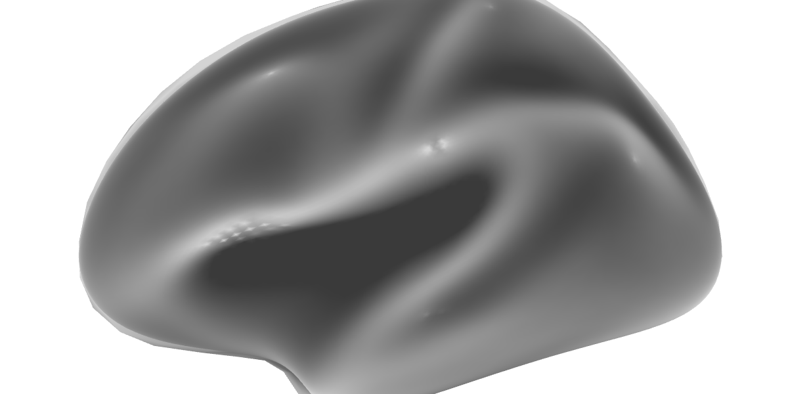
Adding Spheres to the Surface
The spheres argument allows you to draw spherical
markers at specified coordinates. It requires a data frame with columns
x, y, z, and radius.
An optional color column can specify colors for each
sphere.
# Define coordinates for some spherical markers
# Sample some vertex indices safely from available vertices
n_vertices <- nrow(coords(white_lh_display))
sample_indices <- sample(1:n_vertices, size = min(3, n_vertices))
peak_coords <- data.frame(
x = coords(white_lh_display)[sample_indices, 1],
y = coords(white_lh_display)[sample_indices, 2],
z = coords(white_lh_display)[sample_indices, 3],
radius = c(3, 4, 2.5)[1:length(sample_indices)],
color = c("yellow", "cyan", "magenta")[1:length(sample_indices)]
)
# Plot the surface and add the spheres
render_surface(white_lh_display, viewpoint = "lateral", spheres = peak_coords)
#> Warning in min(x): no non-missing arguments to min; returning Inf
#> Warning in max(x): no non-missing arguments to max; returning -Inf
#> file:////private/var/folders/9h/nkjq6vss7mqdl4ck7q1hd8ph0000gp/T/Rtmp8JJqZZ/file1688a661a1c76.html screenshot completed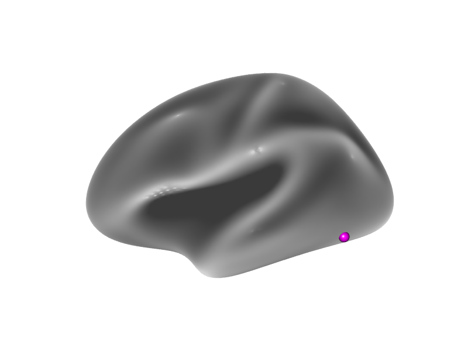
Plotting Other NeuroSurface Objects
The plot() method also works for other classes like
NeuroSurface, LabeledNeuroSurface, and
ColorMappedNeuroSurface. These objects already contain data
and potentially color mapping information. The plot method
extracts this information and passes the appropriate arguments (like
vals, cmap, irange,
thresh, vert_clrs) to the underlying
view_surface function.
# Create a NeuroSurface object with the random data
nsurf <- NeuroSurface(white_lh_display, indices = 1:length(random_vals_display), data = random_vals_display)
# Plot the NeuroSurface - uses data stored within the object
# We can still override or add parameters like cmap, irange, thresh, alpha etc.
render_surface(geometry(nsurf), vals = values(nsurf), cmap = heat.colors(128),
irange = c(-2.5, 2.5), viewpoint = "lateral")
#> file:////private/var/folders/9h/nkjq6vss7mqdl4ck7q1hd8ph0000gp/T/Rtmp8JJqZZ/file1688a7cc18093.html screenshot completed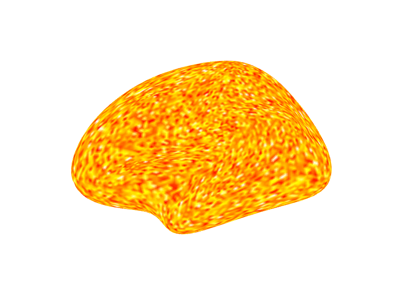
Showing an activation map overlaid on a surface mesh
We will plot surface in a row of 3. We generate a set of random values and then smooth those values along the surface to approximate a realistic activation pattern.
In the first column we display all the values in the map. Next we threshold all values between (-2,2). In the last panel we additionally add a cluster size threshold of 30 nodes.
vals <- rnorm(length(nodes(white_lh_base)))
surf <- NeuroSurface(white_lh_base, indices = 1:length(vals), data = vals)
ssurf <- smooth(surf)
# Generate proper figure paths
.render_counter$n <- .render_counter$n + 1
act_file1 <- knitr::fig_path(paste0("-actmap-", .render_counter$n, ".png"))
.render_counter$n <- .render_counter$n + 1
act_file2 <- knitr::fig_path(paste0("-actmap-", .render_counter$n, ".png"))
.render_counter$n <- .render_counter$n + 1
act_file3 <- knitr::fig_path(paste0("-actmap-", .render_counter$n, ".png"))
dir.create(dirname(act_file1), recursive = TRUE, showWarnings = FALSE)
# Panel 1: All values
img1 <- try(snapshot_surface(geometry(ssurf), file = act_file1, vals = values(ssurf), cmap = rainbow(100),
irange = c(-2, 2), width = 600, height = 450), silent = TRUE)
#> file:////private/var/folders/9h/nkjq6vss7mqdl4ck7q1hd8ph0000gp/T/Rtmp8JJqZZ/file1688a29c1e627.html screenshot completed
# Panel 2: Thresholded (values between -0.2 and 0.2 transparent)
comp <- conn_comp(ssurf, threshold = c(-0.2, 0.2))
img2 <- try(snapshot_surface(geometry(ssurf), file = act_file2, vals = values(ssurf), cmap = rainbow(100),
irange = c(-2, 2), thresh = c(-0.2, 0.2), width = 600, height = 450), silent = TRUE)
#> file:////private/var/folders/9h/nkjq6vss7mqdl4ck7q1hd8ph0000gp/T/Rtmp8JJqZZ/file1688a78ed1fdb.html screenshot completed
# Panel 3: Cluster thresholded (minimum cluster size of 30)
csurf <- cluster_threshold(ssurf, size = 30, threshold = c(-0.2, 0.2))
img3 <- try(snapshot_surface(geometry(csurf), file = act_file3, vals = values(csurf), cmap = rainbow(100),
irange = c(-2, 2), thresh = c(-0.2, 0.2), width = 600, height = 450), silent = TRUE)
#> file:////private/var/folders/9h/nkjq6vss7mqdl4ck7q1hd8ph0000gp/T/Rtmp8JJqZZ/file1688a17c6a0e3.html screenshot completed
# Check if all snapshots succeeded
valid <- sapply(list(img1, img2, img3), function(p) !inherits(p, "try-error") && length(p) > 0 && file.exists(p))
if (all(valid)) {
knitr::include_graphics(c(img1, img2, img3))
} else {
# Fallback to rglwidget
rgl::open3d()
rgl::mfrow3d(1, 3, byrow = TRUE)
view_surface(geometry(ssurf), vals = values(ssurf), cmap = rainbow(100),
irange = c(-2, 2), new_window = FALSE)
rgl::next3d()
view_surface(geometry(ssurf), vals = values(ssurf), cmap = rainbow(100),
irange = c(-2, 2), thresh = c(-0.2, 0.2), new_window = FALSE)
rgl::next3d()
view_surface(geometry(csurf), vals = values(csurf), cmap = rainbow(100),
irange = c(-2, 2), thresh = c(-0.2, 0.2), new_window = FALSE)
rgl::rglwidget()
}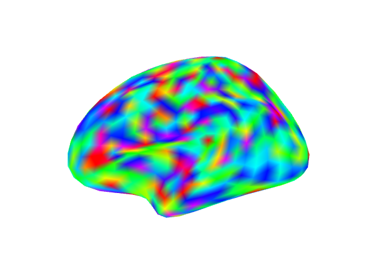
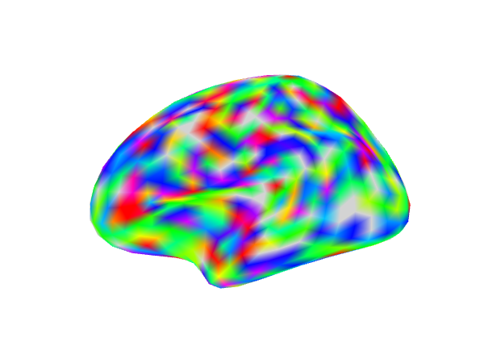

Showing two hemispheres in same scene
# Two hemispheres shown from posterior viewpoint
.render_counter$n <- .render_counter$n + 1
posterior_file <- knitr::fig_path(paste0("-posterior-", .render_counter$n, ".png"))
dir.create(dirname(posterior_file), recursive = TRUE, showWarnings = FALSE)
img_path <- try({
file <- posterior_file
rgl::open3d()
rgl::par3d(windowRect = c(0, 0, 1200, 600))
rgl::bg3d(color = "white")
view_surface(white_lh_display, bgcol = curv_cols(curv_lh_display),
viewpoint = "posterior", new_window = FALSE)
view_surface(white_rh_smooth, bgcol = curv_cols(curv_rh),
viewpoint = "posterior", new_window = FALSE, offset = c(100, 0, 0))
if (rgl::rgl.useNULL() && requireNamespace("webshot2", quietly = TRUE)) {
rgl::snapshot3d(file, webshot = TRUE)
} else {
rgl::rgl.snapshot(file)
}
rgl::close3d()
file
}, silent = TRUE)
#> Warning in min(x): no non-missing arguments to min; returning Inf
#> Warning in max(x): no non-missing arguments to max; returning -Inf
#> Warning in min(x): no non-missing arguments to min; returning Inf
#> Warning in max(x): no non-missing arguments to max; returning -Inf
#> file:////private/var/folders/9h/nkjq6vss7mqdl4ck7q1hd8ph0000gp/T/Rtmp8JJqZZ/file1688a4fb2fb2a.html screenshot completed
if (!inherits(img_path, "try-error") && file.exists(img_path)) {
knitr::include_graphics(img_path)
} else {
# Fallback to rglwidget
rgl::open3d()
view_surface(white_lh_display, bgcol = curv_cols(curv_lh_display),
viewpoint = "posterior", new_window = FALSE)
view_surface(white_rh_smooth, bgcol = curv_cols(curv_rh),
viewpoint = "posterior", new_window = FALSE, offset = c(100, 0, 0))
rgl::rglwidget()
}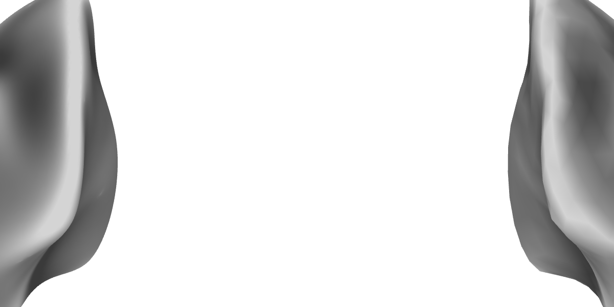
Next Steps
For interactive 3D visualization with
surfwidget(), see
vignette("interactive-surfaces").
For publication-quality multi-view figures, see
vignette("surfplot-style-figures").